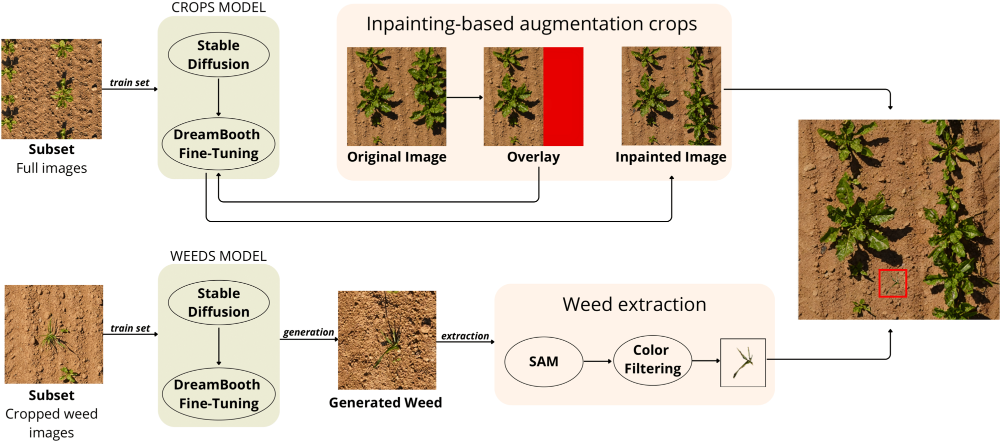
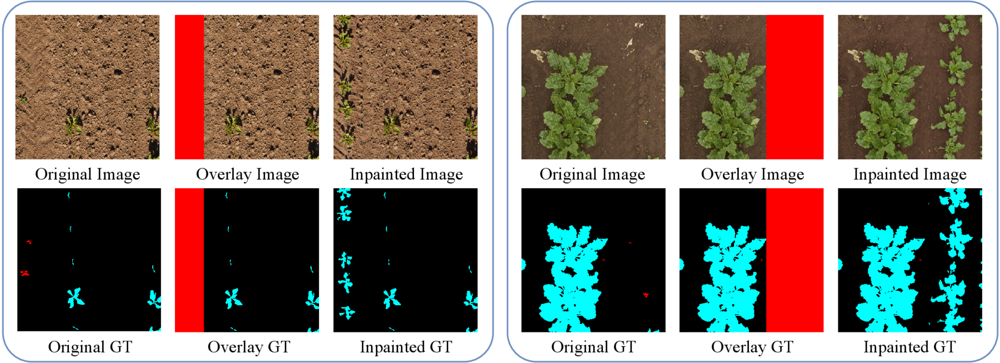
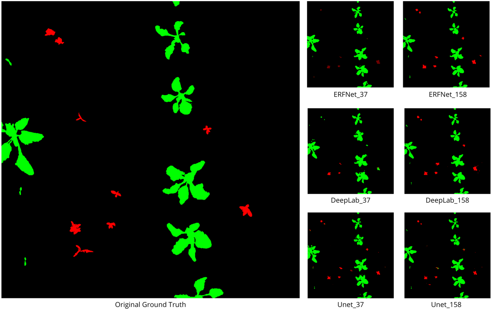
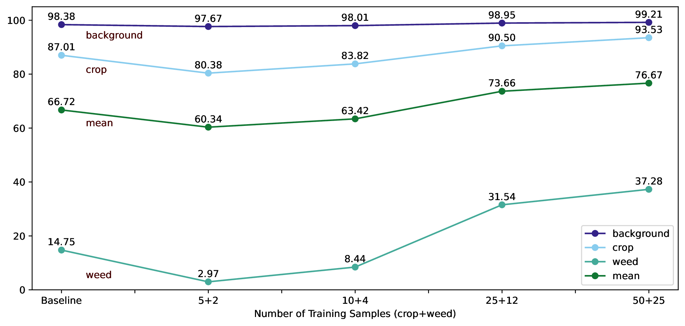

ICPR 2026

Precision agriculture depends on accurate crop–weed discrimination to enable efficient weed control and sustainable crop production. However, building large-scale annotated datasets is time-consuming and costly. We introduce WeedDiffusion, a data-augmentation framework that leverages DreamBooth-tuned diffusion models to generate training data for crop and weed segmentation. Our approach combines two complementary strategies: (i) inpainting crop regions using a DreamBooth model trained on in-distribution crop imagery, and (ii) cut-and-paste generation of weed instances, created by a second fine-tuned DreamBooth model and segmented with the Segment Anything Model. The augmented images are paired with automatically reconstructed masks for training semantic segmentation models.
Experiments show that WeedDiffusion produces morphologically realistic samples and consistently improves the mean Intersection-over-Union across different segmentation architectures, with the largest gains on the underrepresented weed class. Ablation studies vary the size of both the synthetic set and the real data used to train the generator, confirming the approach's data efficiency and scalability. WeedDiffusion offers a scalable, model-agnostic solution for enhancing agricultural datasets through targeted, high-fidelity synthetic augmentation.
A Stable Diffusion v1.5 model, fine-tuned via DreamBooth on full-field crop scenes, inpaints field border regions with morphologically accurate crops. Inpainting preserves spatial continuity with the original image while the semantic mask is updated accordingly, guaranteeing pixel-level label consistency.
A separate DreamBooth model generates individual synthetic weeds, which are segmented with SAM and composited into background-only regions of the crop-augmented images under biologically-informed constraints (no overlap with crops or image borders). Masks are merged into the ground truth.

Semantic-segmentation IoU (%) on the PhenoBench validation set (772 images). All models start from the same 37 real images; WeedDiffusion adds 120 synthetic samples. Best row per architecture highlighted.
| Architecture | Online aug. | Offline aug. | BG | Crop | Weed | Mean |
|---|---|---|---|---|---|---|
| ERFNet | geo+color | none | 98.38 | 87.01 | 14.75 | 66.72 |
| geo+color | cGAN | 98.51 | 87.04 | 21.34 | 68.96 | |
| geo+color | LSB | 98.74 | 87.89 | 22.57 | 69.73 | |
| geo+color | WeedDiffusion | 98.95 | 90.89 | 40.02 | 76.62 | |
| DeepLabV3+ | geo+color | none | 98.52 | 86.18 | 10.14 | 64.95 |
| geo+color | cGAN | 98.99 | 87.35 | 17.68 | 68.00 | |
| geo+color | LSB | 99.02 | 87.85 | 19.43 | 68.77 | |
| geo+color | WeedDiffusion | 99.04 | 91.10 | 35.16 | 75.10 | |
| UNet | geo+color | none | 99.05 | 91.02 | 29.98 | 73.35 |
| geo+color | cGAN | 99.13 | 91.45 | 30.87 | 73.82 | |
| geo+color | LSB | 99.17 | 91.83 | 31.54 | 74.18 | |
| geo+color | WeedDiffusion | 99.26 | 92.90 | 45.55 | 79.23 |
Adding WeedDiffusion samples improves mean IoU by +5.9 to +10.1 points, with the weed IoU more than doubling for every architecture (ERFNet 14.8→40.0, DeepLabV3+ 10.1→35.2, UNet 30.0→45.6).


@inproceedings{demarinisWeedDiffusionDualBranchSynthetic2027,
title = {WeedDiffusion: A Dual-Branch Synthetic Augmentation Framework for Weed Mapping},
author = {De Marinis, Pasquale and Iammarino, Antonio and Vessio, Gennaro and Castellano, Giovanna},
booktitle = {Pattern Recognition},
publisher = {Springer Nature Switzerland},
year = {2027},
pages = {545--559},
doi = {10.1007/978-3-032-31583-0_36}
}